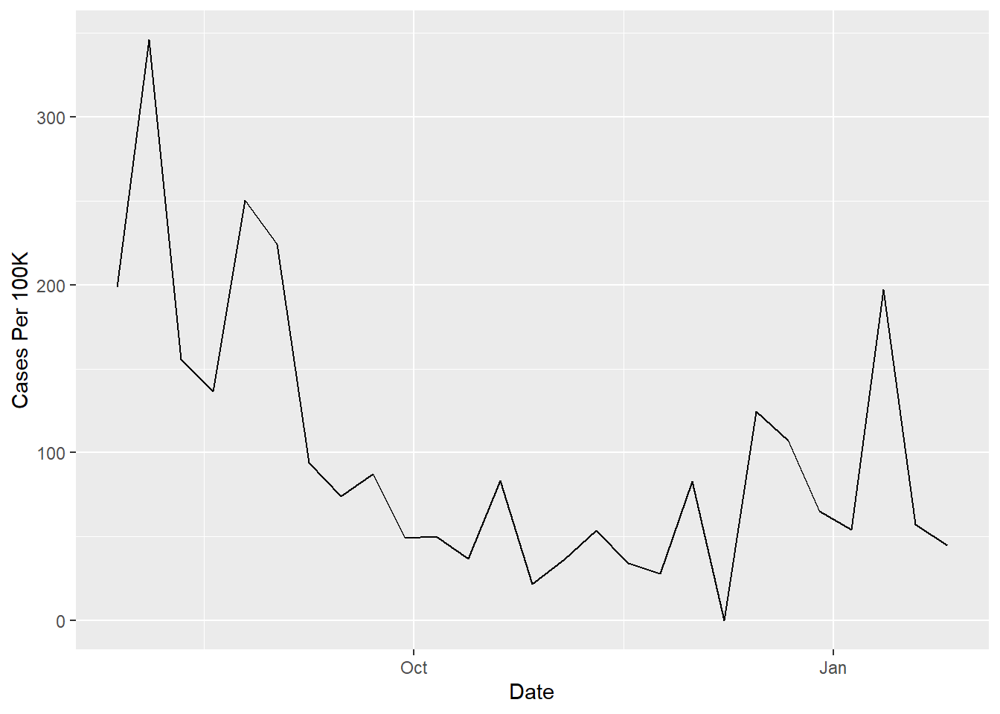
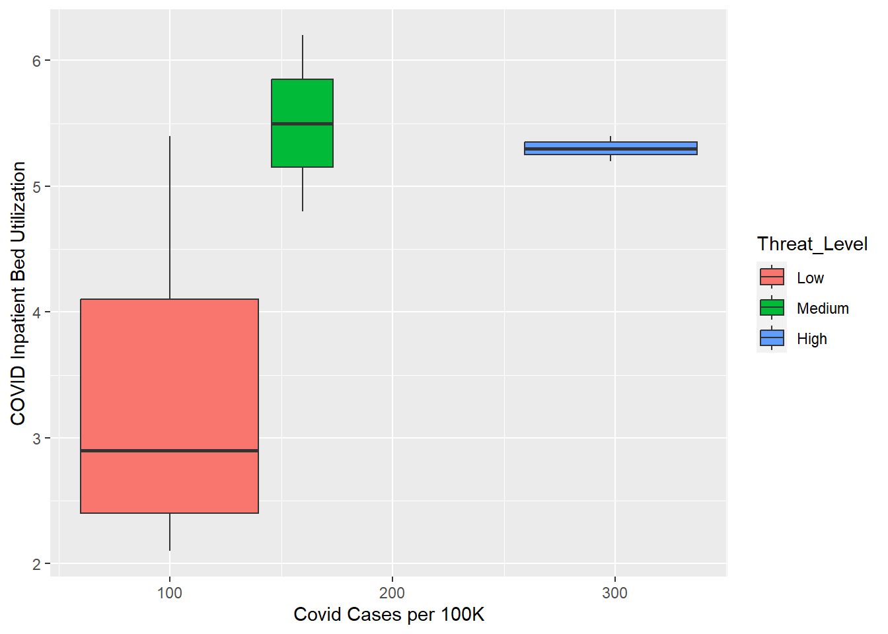

This data was obtained from data.cdc.gov and contains data from 2/24/2022 to 1/26/2023. This dataset contains the same values used to display information available on the COVID Data Tracker, and is updated weekly. The CDC combines three metrics (new COVID-19 admissions per 100,000 population in the past 7 days, the percent of staffed inpatient beds occupied by COVID-19 patients, and total new COVID-19 cases per 100,000 population in the past 7 days) to determine the COVID-19 community level and classify it as low, medium, or high. This community level can help people and communities make decisions based on their circumstances and individual needs. It has a total of 12 columns and 158,000 rows including all available county data.
#load needed packageslibrary("tidyverse")
Warning: package 'tidyverse' was built under R version 4.2.2
Rows: 157972 Columns: 12
── Column specification ────────────────────────────────────────────────────────
Delimiter: ","
chr (5): county, county_fips, state, health_service_area, covid-19_communit...
dbl (6): county_population, health_service_area_number, health_service_area...
date (1): date_updated
ℹ Use `spec()` to retrieve the full column specification for this data.
ℹ Specify the column types or set `show_col_types = FALSE` to quiet this message.
#cleaning community datacommunity <- community %>%select(county, state, county_population, health_service_area_population, covid_inpatient_bed_utilization, covid_hospital_admissions_per_100k, covid_cases_per_100k, `covid-19_community_level`, date_updated)
I decided to keep the “date_updated” variable as there will be multiple observations for each county.
I decided I needed to reduce the number of observations to make this data a little easier to use; I decided to filter by Georgia to bring this number down as well as give me some relatable data.
#take observations just from Georgia community <- community %>%filter(state =="Georgia")
#alphabetize by county to make easier to see trends in tablecommunity<- community[order(community$county), ]
This is still a lot of observations, so I decided to filter to approximately a six-month period (07-28-2022 - 01-26-2023)
#filter by desired date rangecommunity <- community %>%filter(between(date_updated, as.Date('2022-07-28'), as.Date('2023-01-26')))
I think it would be interesting to use this data analyze the number of COVID cases per 100k in relation to bed utilization and hospital admissions, as well as the number of cases per 100k over time to observe trends in infection. I don;t know the best way to incorporate it, but a graph (boxplot maybe?) including the community leel would also be cool to see. These analyses could tell us something about COVID 19 case trends in Georgia during these last 6 months; as the pandemic draws on after almost 3 year it would be interesting to see what level of community severity still exists.
# save data to RDS filesaveRDS(community, file ="community.rds")
summary(community)
county state county_population
Length:4293 Length:4293 Min. : 1537
Class :character Class :character 1st Qu.: 11164
Mode :character Mode :character Median : 22646
Mean : 66776
3rd Qu.: 57963
Max. :1063937
health_service_area_population covid_inpatient_bed_utilization
Min. : 17137 Min. : 0.000
1st Qu.: 91639 1st Qu.: 2.100
Median : 307497 Median : 3.600
Mean : 548223 Mean : 4.147
3rd Qu.: 456389 3rd Qu.: 5.900
Max. :3830463 Max. :19.300
covid_hospital_admissions_per_100k covid_cases_per_100k
Min. : 0.000 Min. : 0.00
1st Qu.: 3.600 1st Qu.: 29.87
Median : 6.900 Median : 66.12
Mean : 8.176 Mean : 99.06
3rd Qu.:11.800 3rd Qu.: 137.16
Max. :96.500 Max. :1487.08
covid-19_community_level date_updated
Length:4293 Min. :2022-07-28
Class :character 1st Qu.:2022-09-08
Mode :character Median :2022-10-27
Mean :2022-10-27
3rd Qu.:2022-12-15
Max. :2023-01-26
# Seeing COVID-19 Cases per 100K over Timeggplot(clean_data %>%filter(county =="Columbia County"), aes(x = date_updated, y = covid_cases_per_100k)) +geom_line() +labs(x ="Date", y ="Cases Per 100K")

# Boxplots of Inpatient Bed Utilization vs COVID Cases per 100K by Threat Levelclean_data <- clean_data %>%rename(Threat_Level =`covid-19_community_level`) %>%mutate(Threat_Level =factor(Threat_Level, levels =c("Low", "Medium", "High")))ggplot(clean_data %>%filter(county =="Columbia County"), aes(x = covid_cases_per_100k, y = covid_inpatient_bed_utilization, group = Threat_Level, fill = Threat_Level)) +geom_boxplot() +labs(x ="Covid Cases per 100K", y ="COVID Inpatient Bed Utilization")

Data Visualization: COVID-19 in Georgia Counties that Start w/the Letter C
# What Counties Have the Most COVID-19 Hospital Admissions?ggplot(clean_data %>%filter(substr(county, 1, 1) =="C"), aes(x = covid_hospital_admissions_per_100k, y = county)) +geom_col()